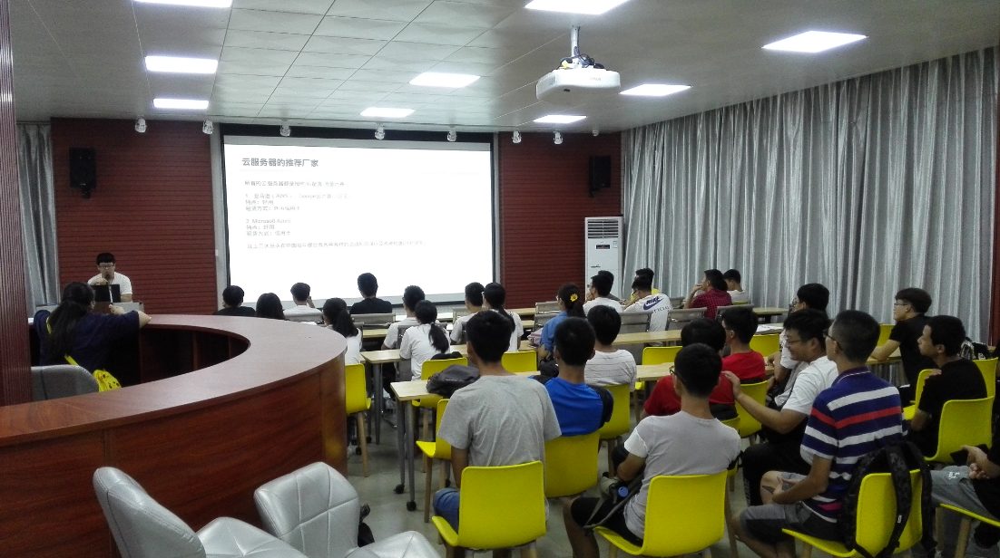

错过的小伙伴可以及时学习复习哦！

一.云服务器/主机(Host)介绍
关于服务器(Server)：
1.一个管理资源并为用户提供服务的计算机软件，通常分为文件服务器（能使用户在其它计算机访问文件），数据库服务器和应用程序服务器。
2.运行以上软件的计算机，或称为主机（Host）。
简单来说就是通过某种方式在一个服务环境里的，一台提供某种服务的机器。
那么什么是云服务器？
凡是满足r’云\+’的，都是指第三方组织提供的服务。比如云服务器就是指由某个公司提供的服务器服务。云服务器是硬件意义的服务器服务。通俗的说就是一个租电脑的，你可以远程用这台电脑。
关于虚拟专用服务器，VPS：
VPS是软件意义的服务器服务。
将一台服务器分割成多个虚拟专享服务器的服务器服务。
在不涉及硬件的操作的视角上，VPS可以和ECS等同。
但他终究只是一个软件，什麽意思呢？
也就是说VPS是虚拟机。
云服务器推荐商家：
所有的云服务器都是按时间/配置/流量计费
1.亚马逊（AWS）、Google云计算（GCE）
特点：好用
租赁方式：外币信用卡
2. Microsoft Azure
特点：好用
租赁方式：信用卡
以上三大巨头在中国每年都会有各种各样的活动和宣讲以及各种优惠(针对学生)
3.Ucloud、QingCloud、百度华为美团云等等
特点：不怎么好用
支付方式：信用卡+在线支付
4.阿里云、腾讯云
特点：不好用，但是很稳定，市场份额大
支付方式：心里没点数？
VPS的推荐厂家
1.BandwagonHost(搬瓦工，BWH）
特点：为数不多的支持支付宝的vps厂家，针对中国电信有特殊线路
2.Vultr，Linode，Digitalocean等
特点：还行
二.Linux和各发行版介绍
Linux是一种类Unix操作系统（的内核，例如Windows各个版本的内核是Windows NT），开源世界的代表性产物之一，特点是完全由社区进行开发。
操作系统的概念大家可以自行了解，这里请大家虚心找找科普资料，和绝大部分人之前的理解完全不同。
特点是其内核可以轻易在各个不同平台上进行移植，并且由于开源的属性拥有千千万万种发行版。
所谓的发行版就是最后大家使用的操作系统。
Linux的主要使用场景是服务器操作系统和嵌入式操作系统。
在这里也要明确一些概念：
1.Windows和Linux是同级关系，并不存在高低。
2.操作系统发行版的使用完全是按照需求来定位的，不存在“最好的发行版”。
3.操作系统的概念十分复杂，其性能的定义也很复杂。
4. Linux的发行版之间的关系错综复杂，但请大家眼熟这几个词：
GNU、RedHat、GPL
LAMP、LNMP
Debian、Fedora、openSUSE
Linux发行版的关系错综复杂，那有多复杂呢。。
1.Debian系
Debian、Ubuntu、LinuxMint、ChromiumOS、GoogleChrome OS等
2.RedHat系
RedHat Enterprise Linux、Fedora、CentOS、Oracle Linux等
3.Gentoo系
Gentoo Linux、FuntooLinux等
4.移动端
Android、webOS等
三.薅羊毛的羊毛机
对CS专业来说，拥有一台Linux设备是必要的。
不建议在笔记本上装任何形式的虚拟机，除非你的笔记本已经不是笔记本了
_(:з」∠)_
所以在此推荐一下一块钱一个月，十块钱一个月的羊毛学生机。
参考资料：
阿里云学生机：https://promotion.aliyun.com/ntms/act/campus2018.html
腾讯云学生机：https://cloud.tencent.com/act/campus
教程：https://www.jianshu.com/p/2b45359d7441
反正都这样，大家有什么不懂的可以在我们论坛上发帖子问。
友情提示：论坛网址：http://bbs.gxuacm.net
四.命令行与GUI
命令行：也就是所谓的“黑框框”，通常指用户通过输入指令的方式使用计算机，操作效率高。
GUI：图形交互界面，是指采用图形方式显示的计算机操作用户界面。与早期计算机使用的命令行界面相比，图形界面对于用户来说在视觉上更易于接受，但是操作效率低。
但他们都只是用户界面，也就是UI。
什麽意思？
举个栗子：生化危机里的红后
用户通过和红后交流，来完成对计算机的操作。
再举个栗子：
Siri
微软小娜
他们都完成了“桥梁”的作用，类比：F(x) -> y 中的方法F。
UI怎么实现？你觉得呢？
比如命令行，通过读取键盘等设备发送的信号输入，通过某种通信协议发回输出
比如GUI，通过鼠标和键盘读取用户操作输入，通过显示信号输出。
比如人工智能类的UI，通过各种传感器分析声音、图像输入，再通过控制器输出。
用户界面之间没有高低之分，他们的实现也没有。
他们唯一的评价方式的易用性和效率。
五.Linux指令格式
所有的指令都是
命令名[选项[参数….] ]
对于特定的指令可递归和连接，大小写敏感
例如显示当前路径：
pwd
显示当前目录的文件和拥有者、权限：
ls –g
显示指定目录的文件和拥有者、权限：
ls-g path\to\order
虽然格式简单，但是可以写出很复杂的指令
（所以运维工程师很喜欢用力敲Enter）
六.有关英文和如何学习
1、活用搜索引擎
一个XX工程师并不是说要背下来所有的使用手册和文档，而是要能够精准描述问题并活用搜索引擎。
例如希望知道C语言的printf如何使用，可以在搜索引擎搜索：
clanguage printfdocument
希望知道ssh的配置方式
configuresshin linux
2、尽可能阅读英文资料
虽然汉语的确十分优美，但是对于理工科，英文才是目前世界最为通用的工具语言。
世界两百多个国家地区，语言成千上万种
但是最后绝大部分的资料第一版本都会是英文。
对大家来说，
：CS相关的所有科研资料都只能使用英文（如果有点梦想）
：现代计算机完全基于英文字母和数字，各项输出信息不可能脱离英文
：对于程序的技术文档，英文资料是最为齐全的
：等等。。
3.关注社区
社区和论坛是交流的平台
对于国外的GitHub、Stack Overflow、Slack
国内的知乎、CSDN、cnblog
个人或组织的blog
通常大家都能够通过这些获得前沿动态，并学习到有用的知识
六.禁♂断(fanqiang)
有关Great Firewall
GFW使得大陆无法正常使用Google为代表的诸多境外服务，对于日常生活影响不大，但是对于科研与技术方向的大家来说，这是致命的。所以我们绕过他。
为何可以绕过？
从方法论上来说属于图论知识，从技术来说较为复杂。
怎么绕过？
图论来说是找一条别的路径，也就是说找一个同时满足：
你能访问这台设备
这台设备能访问被防火墙拦截请求的设备
那么你就可以通过这台设备访问被防火墙拦截的设备，也就是说所谓的代理
GFW是黑名单性质的，也就是说，拥有一台境外的VPS就能够绕开GFW了。
具体操作请大家直接阅读教程：
https://go2think.com/%E7%A7%91%E5%AD%A6%E4%B8%8A%E7%BD%91%EF%BC%9Avultr-vps-%E6%90%AD%E5%BB%BA-shadowsocks%EF%BC%88ss%EF%BC%89%E6%95%99%E7%A8%8B%EF%BC%88%E6%96%B0%E6%89%8B%E5%90%91%EF%BC%89/
https://medium.com/@jackme256/%E6%90%AC%E7%93%A6%E5%B7%A5-vps-%E6%90%AD%E5%BB%BA-shadowsocks-ss-%E7%A7%91%E5%AD%A6%E4%B8%8A%E7%BD%91%E5%9B%BE%E6%96%87%E6%95%99%E7%A8%8B-ss%E5%A4%9A%E7%94%A8%E6%88%B7%E9%85%8D%E7%BD%AE%E4%BC%98%E5%8C%96-efc6dda704fe
七.希望大家阅读的资料和作业
请大家通过自己的学习，在Linux环境上通过任意方式输出HelloWorld。
1.不允许直接通过输出命令输出，必须是调用某一个程序或脚本
比如在linux编译一个c语言的程序，调用他来输出
2.可以通过编写程序并编译的方式输出
3.下次集体培训之前将截图发送到计协邮箱：
[url=]gxuccieca@163.com[/url]
邮件标题为”学号-姓名”
正文描述操作方式

首先安利一波计协的平台
1.计算机协会论坛：http://bbs.gxuacm.net
大家可以在论坛上注册账号并发帖提问
2.广西大学在线评测平台：https://oj.gxu.edu.cn
刷题训练码力
3.微信公众号，搜索“计电计协君”
4.计协官网：http://www.gxuca.net/
知乎等平台因为推荐机制等原因，适合大家阅读学习。
希望大家能够自行寻找资料，并相信自己的学习能力
https://www.jianshu.com/p/1c18a3678555
https://www.zhihu.com/topic/19554305/hot
https://www.zhihu.com/topic/19627873/hot
https://zhuanlan.zhihu.com/p/34367183
（入门编程语言不需要一学期，平时能学很多东西，不能只满足于不挂科）
大家加油！